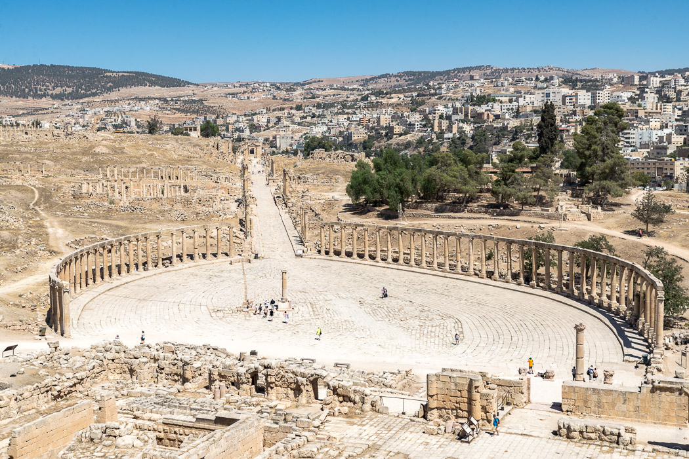
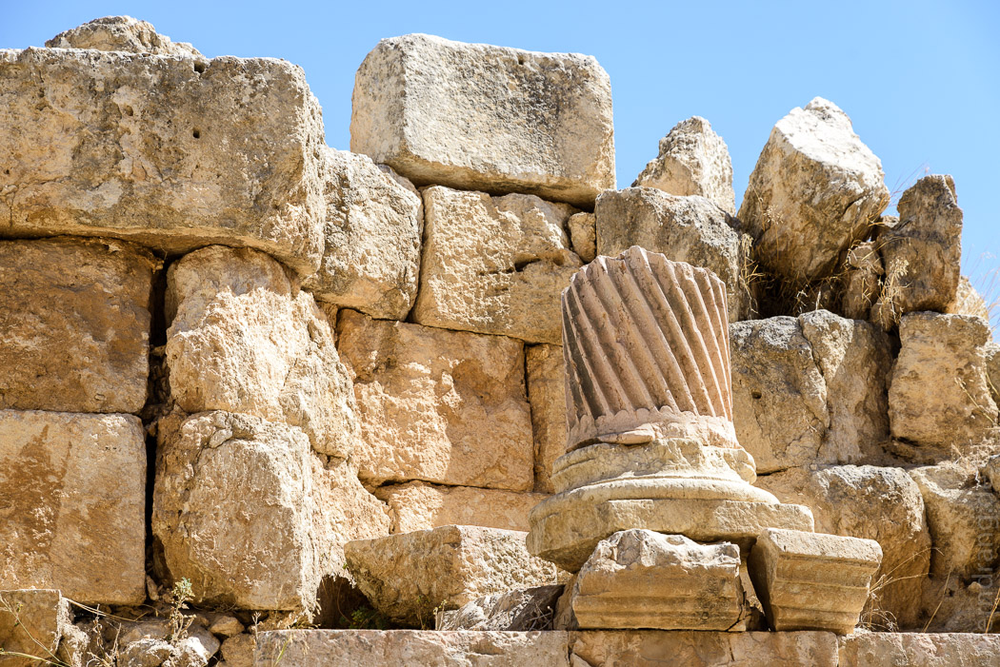
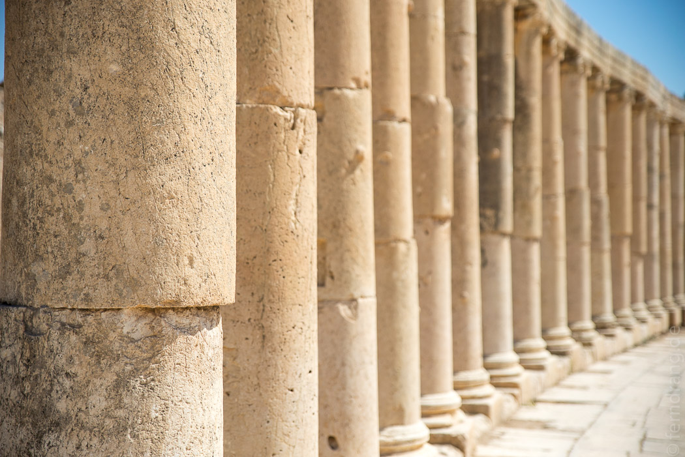
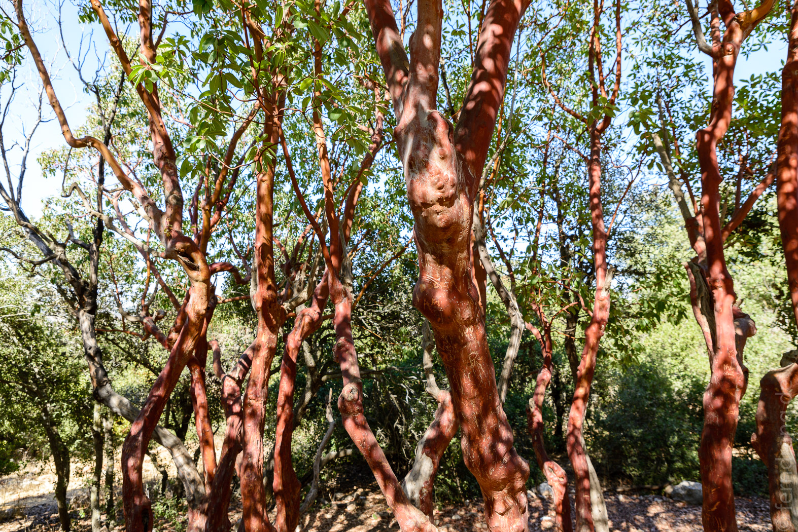

19/09/2016
Jerash und Ajloun
Mit unserem kleinen, türkisfarbenen Mietauto haben wir uns in den wilden Verkehr von Amman gestürzt und sind nach einer Weile vor den Toren der Stadt wieder ausgespuckt worden. Der erste Blick ins Land war ein riesiges Panorama einer endlosen Hügellandschaft, die plackenhaft mit dem typisch jordanischen Haus bebaut ist, das in tausendfacher Kopie aus leeren schwarzen Fensternlöchern glotzt. Die Autobahn windet sich in steilen Bögen zwischen den Hügeln her. Unser armes Auto ächzt sehr, wenn es bergauf geht.
Nach einer Stunde haben wir Jerash erreicht, wo gut erhaltene römische Ruinen angepriesen werden. Wer mal in Rom war, darf daran zweifeln, ob sie wirklich so gut erhalten sind. Von der kleinen Pferderennbahn ist genug übrig, um vom Grundriss auf den Zweck zu schließen, was man von den meisten anderen Ruinen abgesehen vom Amphitheater nicht behaupten kann. Das Highlight, heute wie damals, war der prächtige Artemistempel, dessen schöne korinthische Säulen erstaunlicherweise fast vollständig die Jahrtausende überdauert haben. In der gleißenden Mittagshitze ist der Spaziergang über die kahle Ausgrabungsfläche entlang der endlosen Säulenreihe eine anstrengende Angelegenheit.
  Wir sind weiter ins nahe gelegene Ajloun gefahren. Dort sollte es schöne Wandermöglichkeiten in einem Wald geben. Obwohl wir noch nicht lange in Jordanien sind, klingt Wald schon nach einer Besonderheit. Die Bäume sind nur knapp über mannshoch und ein hübscher Pfad schlängelt sich dazwischen her. Entweder sind wir zwischendurch falsch abgebogen oder einfach schneller als erwartet. Nach zu kurzer Zeit sind wir wieder am Ausgangspunkt gelandet. Der nette Parkangestellte drückt beide Augen zu und erlässt uns das Eintrittsgeld.
